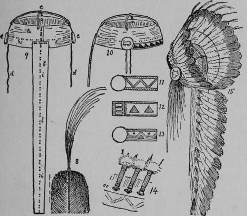

Details Of The Warbonnet
Description
This section is from the book "The Book Of Woodcraft", by Ernest Thompson Seton. Also available from Amazon: The Book of Woodcraft.
Details Of The Warbonnet
1. The plain white Goose or Turkey feather.
2. The same, with tip dyed black.
3. The same, showing ruff of white down lashed on with wax end.
4. The same, showing leather loop lashed on for the holding lace.
5. The same, viewed edge on.
6. The same, with a red flannel cover sewn and lashed on the quill. This is a "coup feather".
7. The same, with a tuft of red horsehair lashed on the top to mark a "grand coup" and (a) a thread through the middle of the rib to hold the feather in proper place. This feather is marked with the symbol of a grand coup in target shooting.
But now there arose a big, square-jawed man, who had smoked in silence. He made a very short speech. It was full of plain, good sense. He told them what he knew about the United States Army - how superior it was to all the Indian tribes put together, how hopeless it was to fight it - and urged them to give up the foolish notion of the warpath. His speech would not compare with that of the other. He had neither the fire nor the words - he had not even the popular sympathy, and yet he quelled the disturbance in his few sentences, and as I looked there dawned on me the reason for his power. While the gifted orator of the big words had in his hair a single untufted eagle feather, the other, the man with the square jaw, had eagle feathers all around his head and trailing down his back and two feet on the ground behind him, and every one of them with a bright red tuft of horsehair at its top, and I knew then that I was listening to the voice of Plenty-Coups, the most famous chief on the Upper Missouri, and I realized how a few words from the man of deeds will go further than all the stirring speeches of one who has no record of prowess to back up his threats and fiery denunciations.
8. The tip of a feather showing now the red horsehair tuft is lashed on with fine waxed thread.
9. The groundwork of the warbonnet made of any soft leather, (a) a broad band, to go round the head laced at the joint or seam behind; (b) a broad tail behind as long as needed to hold all the wearer's feathers; (c) two leather thongs or straps over the top; (d) leather string to tie under the chin; (e) the buttons, conchas or side ornaments of shells, silver, horn, or wooden disks, even small mirrors and circles of beadwork were used, and sometimes the conchas were left out altogether; they may have the owner's totem on them, usually a bunch of ermine tails hung from each side of the bonnet just below the concha. A bunch of horsehair will answer as well; (hh) the holes in the leather for holding the lace of the feather; 24 feathers are needed for the full bonnet, without the tail, so they are put less than an inch apart; (iii) the lacing holes on the tail; this is as long as the wearer's feathers call for; some never have any tail.
10. Side view of the leather framework, showing a pattern sometimes used to decorate the front.
11, 12 and 13. Beadwork designs for front band of bonnet; all have white grounds.
No. 11 (Arapaho) has green band at top and bottom with red zigzag. No. 12 (Ogallala) has blue band at top and bottom, red triangle; the concha is blue with three white bars and is cut off from the band by a red bar. No. 13 (Sioux) has narrow band above and broad band below blue, the triangle red, and the two little stars blue with yellow centre.
14. The bases of three feathers, showing how the lace comes out of the cap leather, through the eye or loop on the bottom of the quill and in again.
15. The completed bonnet, showing how the feathers of the crown should spread out, also showing the thread that passes through the middle of each feather on inner side to hold it in place; another thread passes from the point where the two straps (c in 9) join then down through each feather in the tail.
Continue to:
Tags
bookdome.com, books, online, free, old, antique, new, read, browse, download